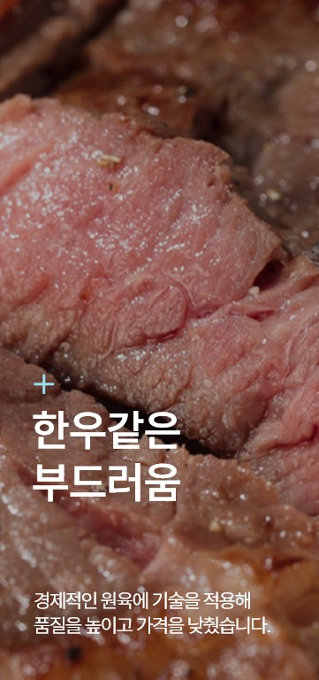
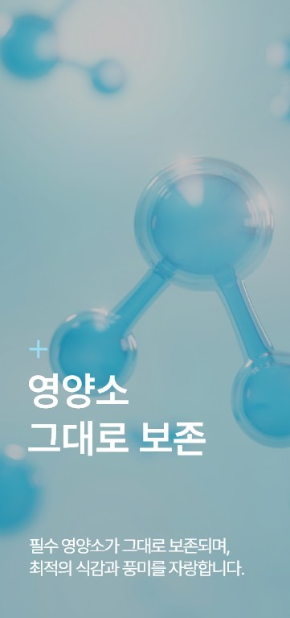
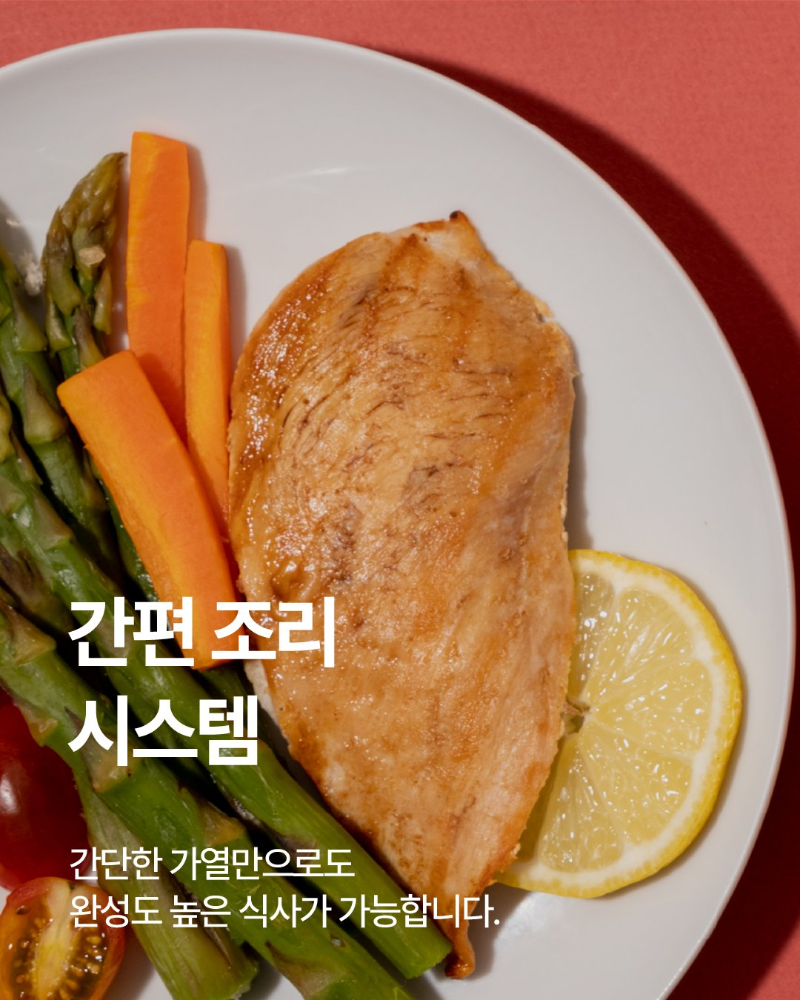
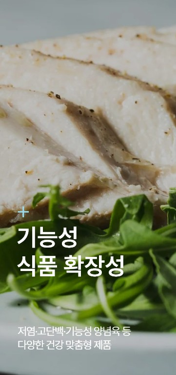
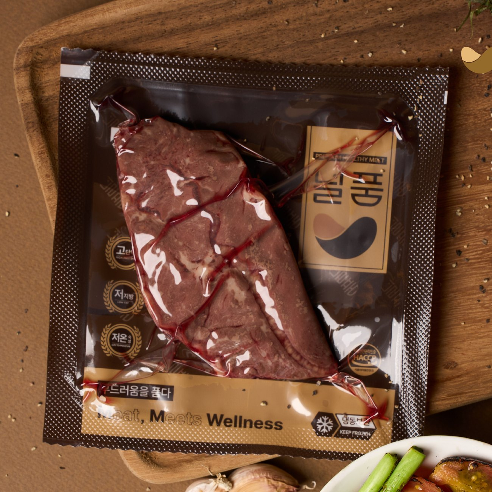
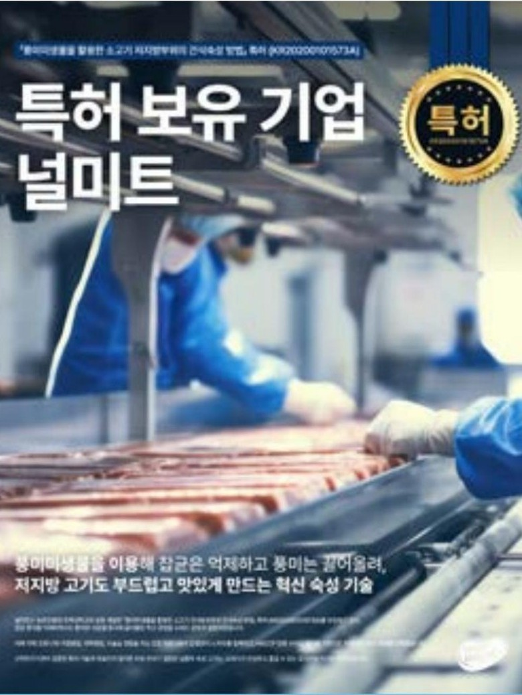
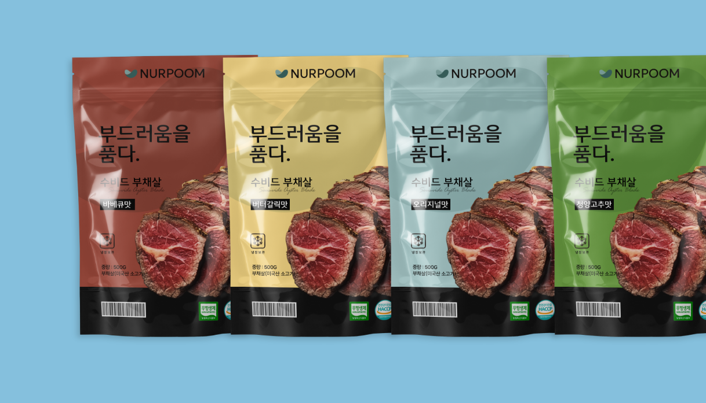
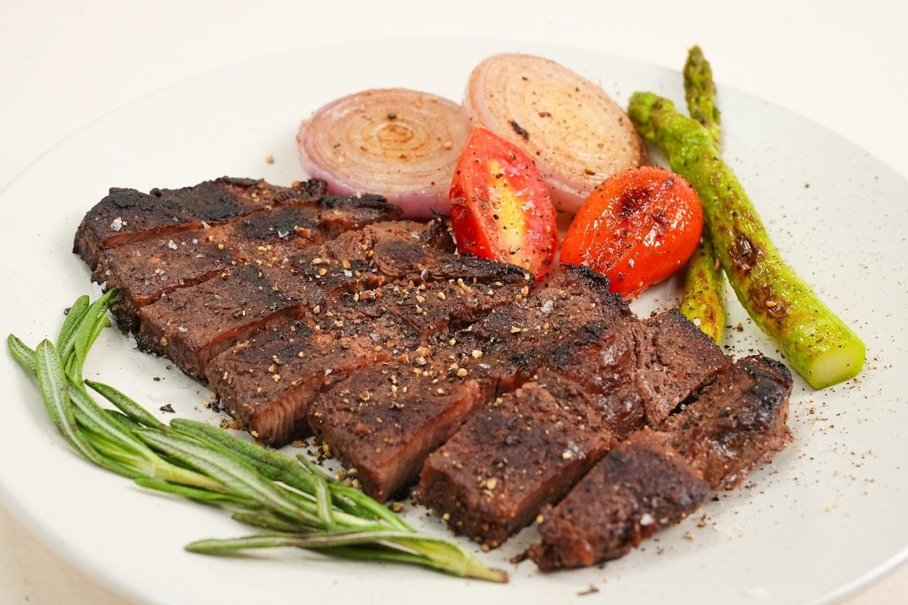
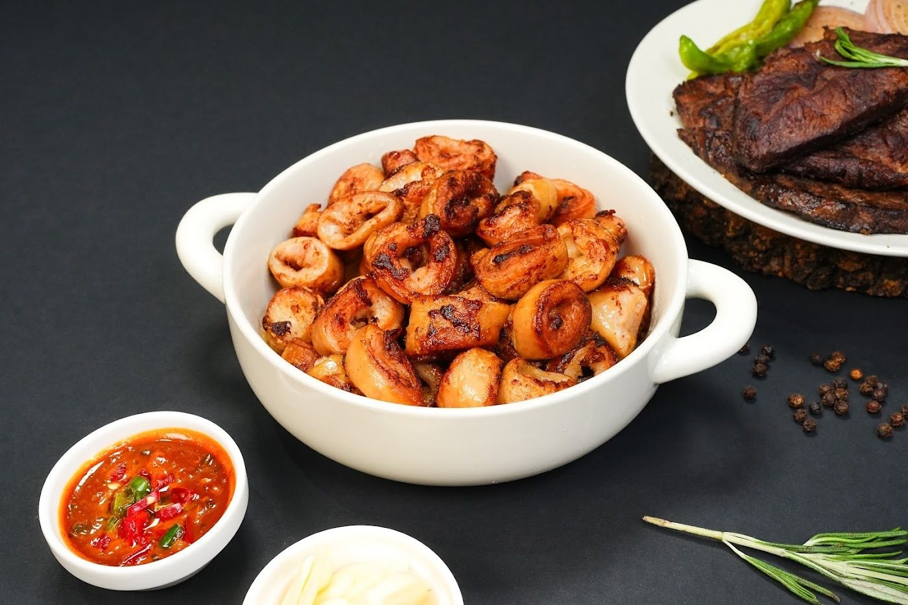

Franchise Supply
프랜차이즈 식자재 공급
가맹본부와 협의한 메뉴 규격에 따라 육류를 가공·공급합니다. 부위와 절단 두께, 팩당 중량을 정해 매장에서 같은 기준으로 조리할 수 있도록 합니다.
납품 매장 100곳+ · 브랜드 전용 규격 · 지역별 배송 일정
NURMEAT Co., Ltd.
건강과 고기가 만나는 지점.HACCP 인증 식품 제조 · 수비드 · OEM
프랜차이즈와 식품기업에
육가공 제품을 공급합니다.
주식회사 널미트는 2023년 식육포장처리업으로 사업을 시작했습니다. 대구 달성군 자체 공장에서 거래처별 규격에 맞춰 원료육을 가공하고, 양념육과 수비드 제품을 생산합니다.
“간호사로 일하며 환자들의 식사를 가까이에서 지켜봤습니다. 누구나 고기를 더 편하게 즐길 수 있으면 좋겠다는 생각에서 널미트가 시작되었습니다.”
대표이사홍 정 욱




숫자로 보는 널미트입니다. 생산 능력과 공급 규모, 시장의 반응이 널미트의 현재를 보여줍니다.
원료육 가공부터 진공포장까지 전 라인 기준
현재 납품 중인 매장 기준
식육가공업 · 식육포장처리업
하나의 생산 기반에서 프랜차이즈, B2B, 자체 브랜드 세 갈래로 공급합니다. 카드를 눌러 자세히 보실 수 있습니다.
가맹본부와 협의한 메뉴 규격에 따라 육류를 가공·공급합니다. 부위와 절단 두께, 팩당 중량을 정해 매장에서 같은 기준으로 조리할 수 있도록 합니다.
납품 매장 100곳+ · 브랜드 전용 규격 · 지역별 배송 일정

거래처의 상품 기획에 맞춰 원료육 가공품, 양념육, 수비드 제품을 생산합니다. 제품 용도와 발주 물량에 따라 가공 사양, 포장 단위, 브랜드 필름 적용 여부를 협의합니다.
정형 · 슬라이스 · 양념육 · 수비드 · 소포장

널품(NURPOOM)은 널미트의 수비드 육류 브랜드입니다. 대표 제품인 수비드 부채살 스테이크를 비롯해 가정에서 간편하게 조리할 수 있는 육류 제품을 선보입니다.
수비드 소 부채살 · 고단백 저지방 · 온라인 판매
원료 입고부터 매장 도착까지 전 과정을 널미트가 직접 관리합니다. 중간 단계를 줄여 품질은 일정하게, 공급은 빠르게 유지합니다.
검수 기준에 따른 입고 검사
거래처별 규격에 맞춘 손질
슬라이스 · 양념 · 수비드 조리
미생물 번식 구간 최소화
열성형 밀착 포장으로 신선도 유지
지역별 배송 일정에 따라 공급
널미트는 제조를, 파트너 본사는 브랜드 운영과 가맹 관리를 맡습니다.
2026년, 프랜차이즈 공급 본격화. 파트너 본사의 가맹 사업 성장에 맞춰 생산과 물류를 함께 넓혀, 공급 매장이 전국 100곳을 넘어섰습니다.
달성군 제1공장에 고속 슬라이서, 수비드 조리설비, 열성형 진공포장기를 갖추고 있습니다. 제품별 사양에 따라 정형·절단부터 조리와 포장까지 공정을 구성합니다.

농촌진흥청 특허 기술이전
농촌진흥청과 전북대학교가 공동 개발한 특허 기술을 이전받아 사업화하고 있습니다. 질기고 퍽퍽해 값이 낮던 저지방 부위를 부드럽고 풍미 있는 고부가가치 제품으로 바꾸는 기술입니다.

필름을 성형해 제품을 담고 진공으로 밀봉하는 자동 포장 설비입니다. 자체 브랜드는 물론 거래처 브랜드 필름으로도 생산해, OEM과 PB 상품을 포장까지 한 번에 끝냅니다.

0.1mm부터 5cm까지, 분당 300회 속도로 일정한 두께로 썰어냅니다. 거래처가 원하는 두께와 중량을 그대로 맞춥니다.

진공포장한 고기를 정해진 온도의 물에서 천천히 익힙니다. 육즙과 영양을 지키면서 속까지 고르게 익습니다.

여러 대의 수조를 동시에 가동해 대량 주문도 같은 품질로 생산합니다.
인증과 기술이전, 지원사업 선정 이력을 항목별로 안내합니다.
식품의약품안전처
위해요소 중점관리 기준 적용 사업장
식품의약품안전처
원료 처리부터 포장까지 전 공정 관리
과학기술정보통신부
인정서 제2025154580호
농촌진흥청 · 전북대학교
저지방 부위 식감 개선 기술 사업화
한국농업기술진흥원
2026년 선정 기업
중소벤처기업진흥공단
시제품 품평회 1등 수상
DGIST · 달성군
Value-Up 지원사업 선정
특허청
등록 제4020230184319호
널품(NURPOOM)은 널미트의 수비드 육류 브랜드입니다. 대표 제품인 수비드 부채살 스테이크를 비롯해 가정에서 간편하게 조리할 수 있는 육류 제품을 선보입니다.



작은 식육포장처리업에서 시작해, 연구와 생산, 공급을 모두 갖춘 육류 식품제조 전문기업으로 성장하고 있습니다.
언론과 방송에 소개된 널미트의 이야기입니다.
희망 부위, 가공 규격, 포장 단위, 예상 발주량을 알려주시면 생산 가능 여부와 납품 조건을 안내드립니다.